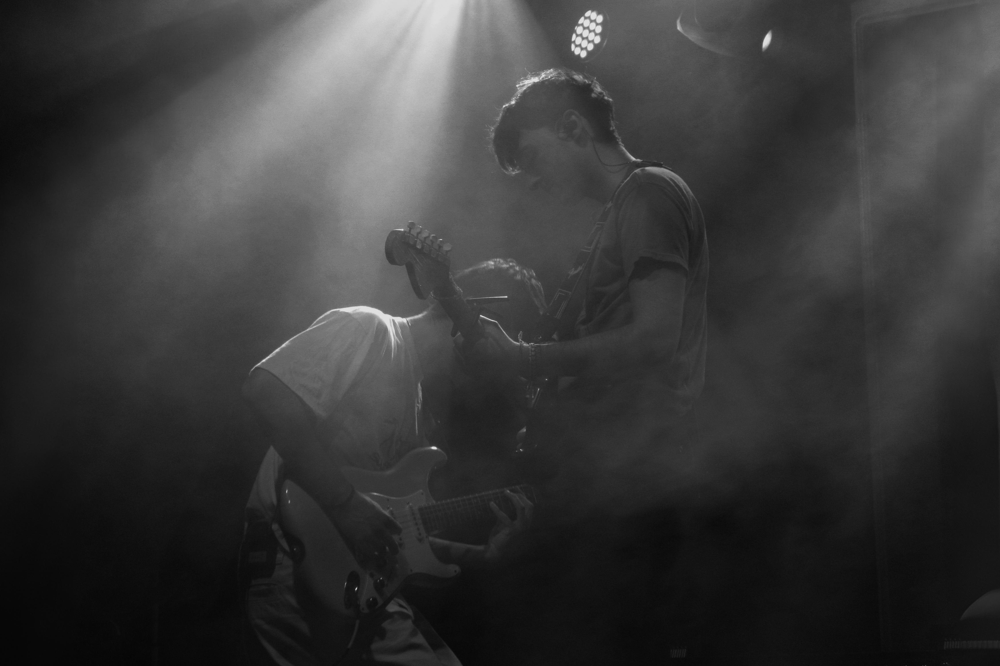
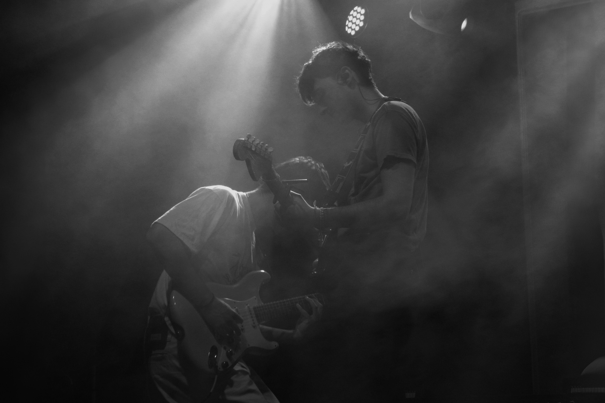
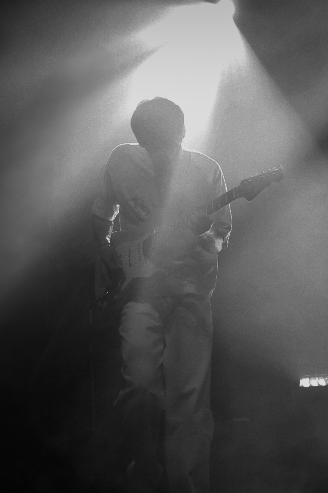
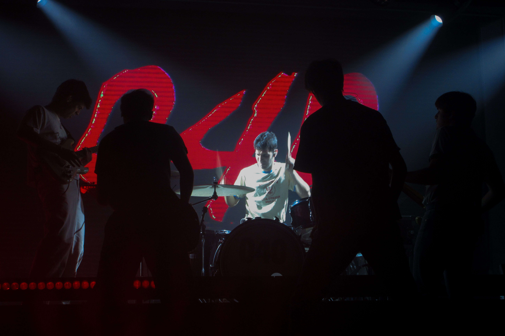
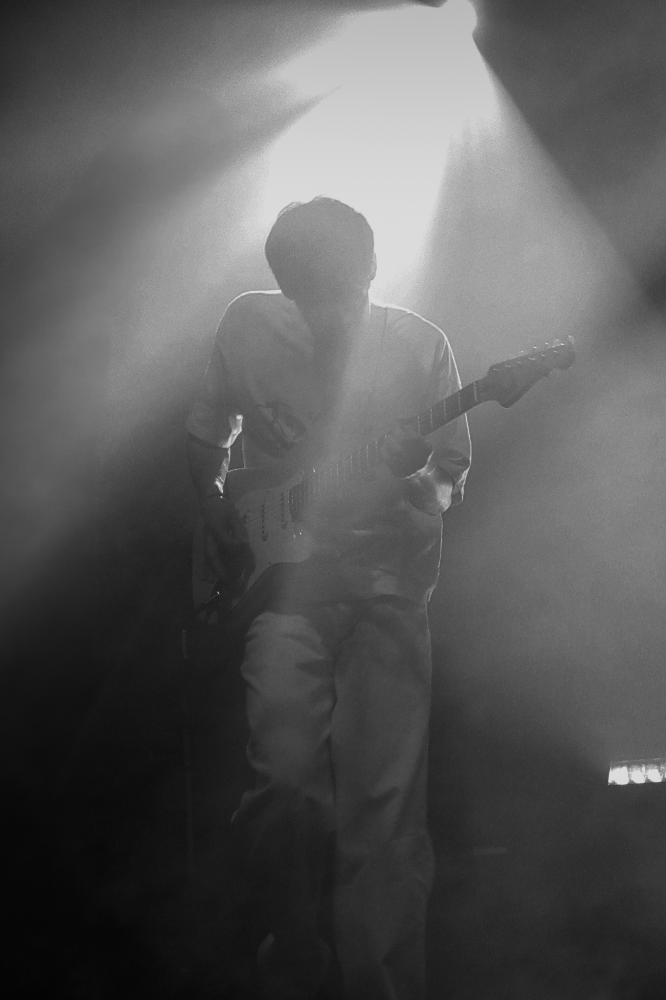
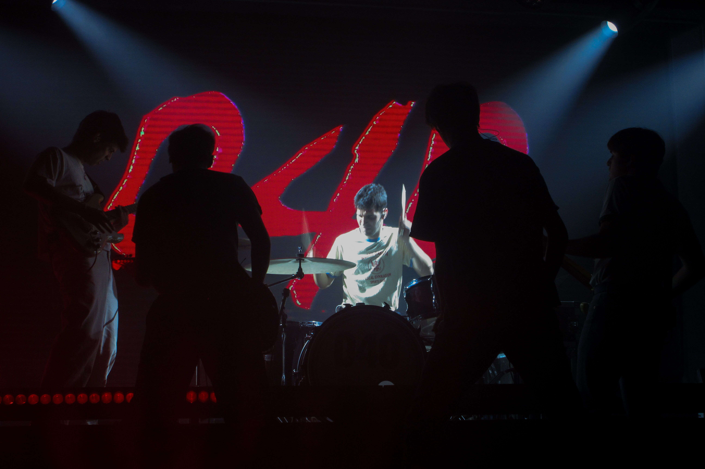
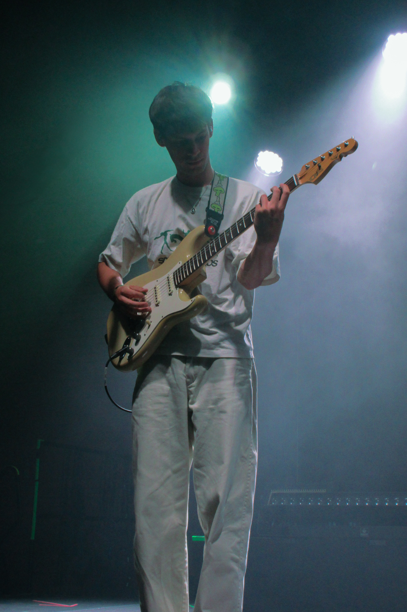
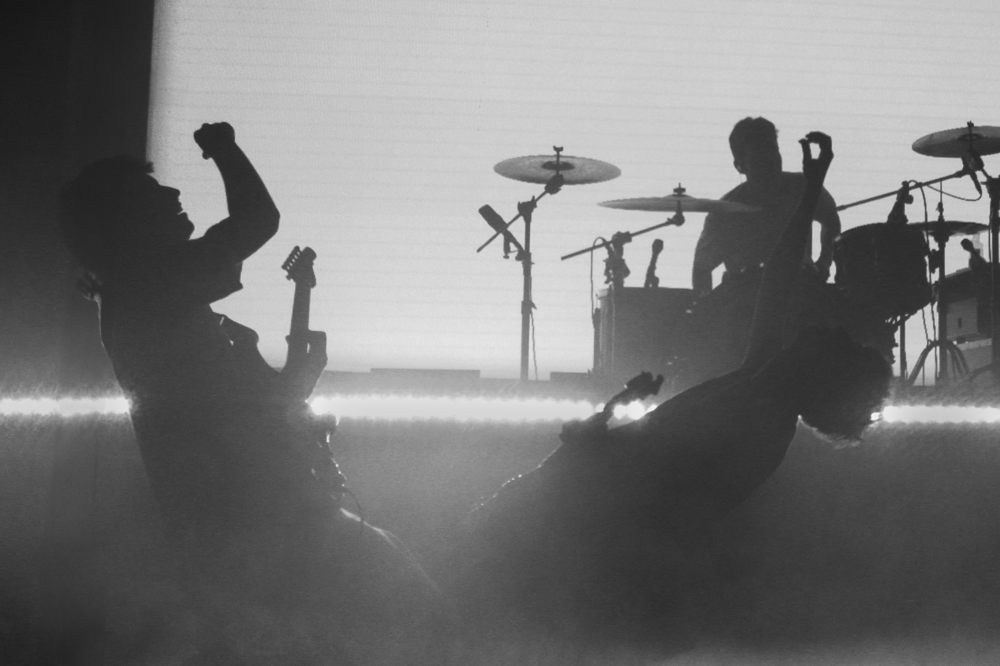
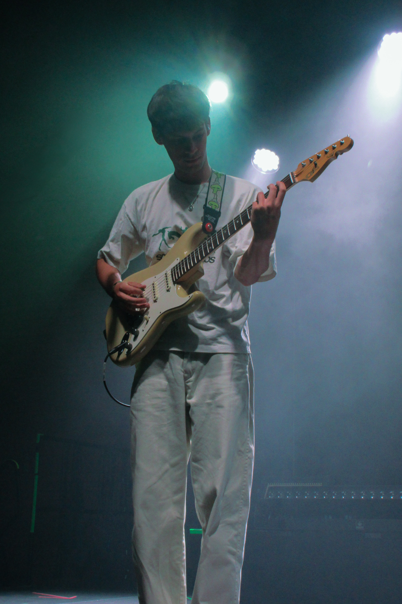
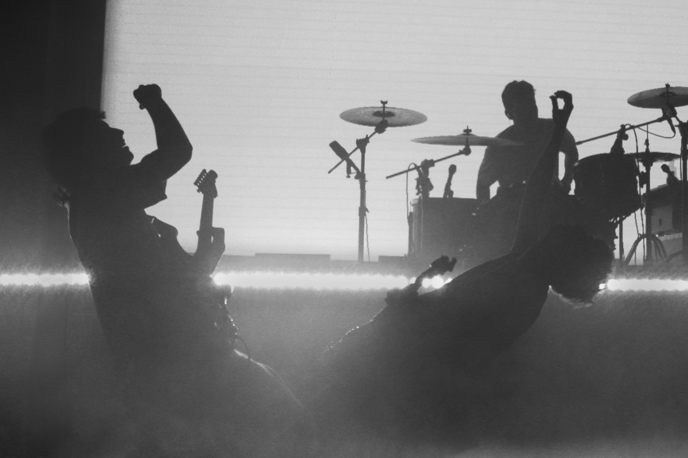

Cámara Digital
2024 - 2025 · España
No a todos los conciertos a los que voy me he podido llevar mi cámara profesional, pero mi cámara digital si que me acompaña a todos lados y la utilizo siempre que puedo. Aquí os dejo un recap de las fotos que más me han gustado de los últimos meses.
Digitales un poco más rándom

Javypablo con StWoods. Sala Villano. 12. diciembre. 2024. Madrid
Besmaya. Inverfest. 25. enero. 2025. Madrid

Javi Chapela. Telonero de Marlena. La Riviera. 20. febrero. 2025. Madrid
Marlena. La Riviera. 20. febrero. 2025. Madrid
Javi Chapela. Café Comercial. 2. abril. 2025. Madrid
malmö 040 (Victor). Kafe Antokia. 31. mayo. 2025. Bilbao
Malmö 040
10. mayo. 2025. Sala Impala. Córdoba.


 



 



 



Festival La Villa
3. mayo. 2025. Pastrana, Guadalajara.
Malmö 040
10/11/12. abril. 2025. Sala La Riviera. Madrid